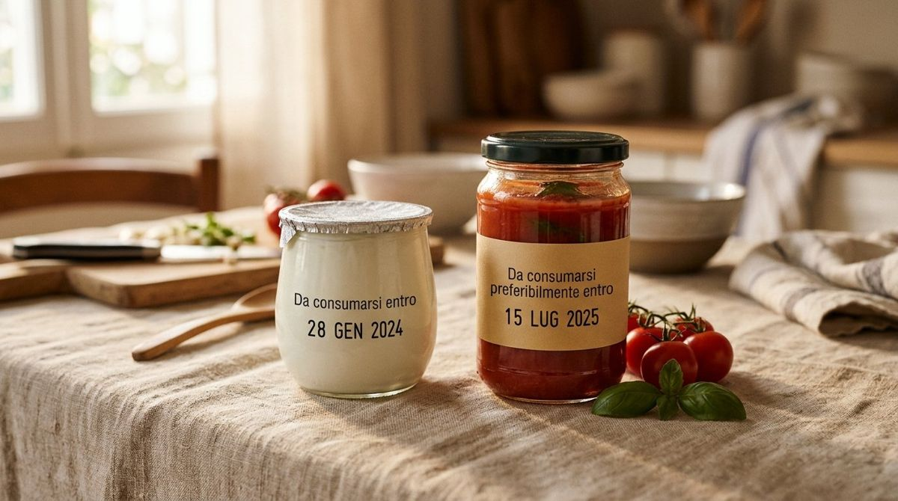

Etichette e scadenze
«Da consumarsi entro» e «preferibilmente entro»: come leggere le scadenze
Guida pratica alla lettura delle etichette: sicurezza alimentare e lotta allo spreco consapevole.

Ogni anno, tonnellate di cibo ancora perfettamente edibile finiscono nella spazzatura a causa di un’errata interpretazione delle etichette. In un contesto globale dove la sostenibilità e la lotta allo spreco alimentare sono diventate priorità non più rimandabili, comprendere la differenza tra le diciture che troviamo sulle confezioni è il primo passo per un consumo responsabile. Non si tratta solo di risparmio economico, ma di un atto di consapevolezza che unisce la tutela della salute pubblica alla salvaguardia dell’ambiente.
In Italia e in tutta l'Unione Europea, l’etichettatura degli alimenti è rigorosamente disciplinata dal Regolamento UE n. 1169/2011. Questo testo legislativo distingue chiaramente tra due concetti spesso confusi: la data di scadenza vera e propria e il termine minimo di conservazione (TMC). Confondere l’una con l’altra può portare a rischi per la salute o, al contrario, a un inutile spreco di risorse.
La data di scadenza: un limite invalicabile per la sicurezza
La dicitura «Da consumarsi entro» (seguita da giorno, mese ed eventualmente anno) rappresenta la data di scadenza vera e propria. Questa indicazione è obbligatoria per i prodotti alimentari molto deperibili dal punto di vista microbiologico, che potrebbero costituire, dopo un breve periodo, un pericolo immediato per la salute umana. Parliamo di alimenti freschi come latte fresco, uova, carne, pesce e prodotti della gastronomia con breve shelf-life.
Superata questa data, l'alimento non è più considerato sicuro. La proliferazione batterica (spesso invisibile a occhio nudo e non sempre accompagnata da cattivi odori) può rendere il prodotto nocivo. Secondo le linee guida del Ministero della Salute, è vietata la vendita di prodotti che abbiano superato la data di scadenza e il consumatore è caldamente invitato a non consumarli, anche se l'aspetto sembra ancora gradevole. In questo caso, il rigore è sinonimo di prudenza e protezione della salute.
Il Termine Minimo di Conservazione: quando la qualità precede la sicurezza
Molto diversa è la natura della dicitura «Da consumarsi preferibilmente entro il». In questo caso ci troviamo di fronte al Termine Minimo di Conservazione (TMC). Si applica a prodotti più stabili, come pasta secca, riso, conserve, biscotti o oli. Questa data non indica il momento in cui l'alimento diventa pericoloso, bensì il periodo fino al quale il produttore garantisce che il cibo manterrà intatte le sue proprietà organolettiche e specifiche (fragranza, sapore, colore, consistenza).
Se conservati correttamente, questi alimenti possono essere consumati anche oltre la data indicata. L'EFSA (Autorità Europea per la Sicurezza Alimentare) ha sottolineato come una corretta comprensione del TMC possa ridurre drasticamente lo spreco domestico. Un pacco di pasta consumato un mese dopo il TMC potrebbe aver perso parte della sua tenuta in cottura, ma non rappresenta un rischio microbiologico per un individuo sano.
L'importanza della conservazione domestica
È fondamentale ricordare che entrambe le indicazioni di data sono valide solo se le modalità di conservazione riportate sulla confezione sono state rispettate. Una confezione di latte fresco lasciata fuori dal frigorifero per ore scadrà ben prima della data impressa. Allo stesso modo, un olio esposto alla luce e al calore irrancidirà molto prima del suo TMC.
Per gestire al meglio la propria dispensa e il frigorifero, ecco alcune buone pratiche suggerite dai tecnologi alimentari:
- Applicare il metodo FIFO (First In, First Out): riporre i prodotti acquistati più recentemente dietro quelli già presenti, così da consumare prima quelli vicini alla scadenza.
- Verificare sempre l'integrità della confezione: una scatola ammaccata o un sottovuoto perso annullano la validità della data indicata.
- Rispettare le zone del frigorifero: la temperatura non è uniforme; carne e pesce vanno nel ripiano più basso (più freddo), mentre frutta e verdura nei cassetti dedicati.
- Leggere attentamente le istruzioni post-apertura: spesso un prodotto che dura mesi sigillato deve essere consumato entro 3-4 giorni una volta aperto.
Oltre la data: come comportarsi per ridurre lo spreco
Davanti a un prodotto che ha superato il Termine Minimo di Conservazione (preferibilmente entro), non occorre gettarlo istintivamente. È possibile effettuare un'autovalutazione sensoriale: controllare che non ci siano muffe, rigonfiamenti della confezione o odori sgradevoli. Se l'alimento si presenta bene, può essere consumato, magari utilizzandolo in preparazioni che prevedono la cottura, che ne stabilizza ulteriormente il profilo.
In conclusione, la chiave per una gestione intelligente della cucina risiede nell'attenzione. Leggere con cura l'etichetta non è solo un atto burocratico, ma una forma di rispetto verso il cibo e verso se stessi. Distinguere tra sicurezza (scadenza) e qualità (TMC) ci permette di mangiare in modo sicuro, risparmiare e dare un contributo concreto alla sostenibilità del pianeta.